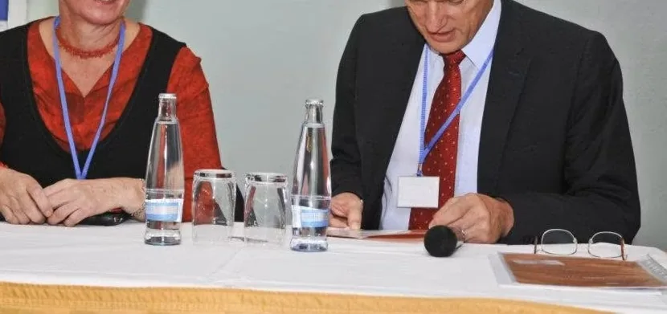
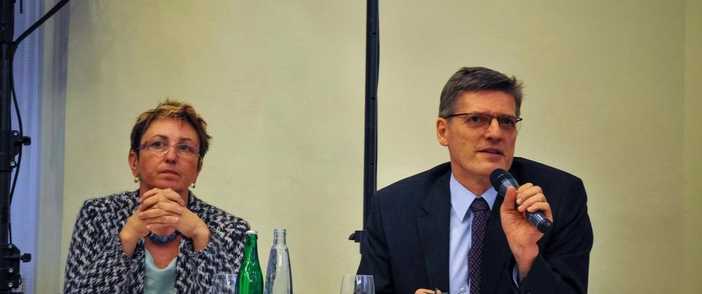
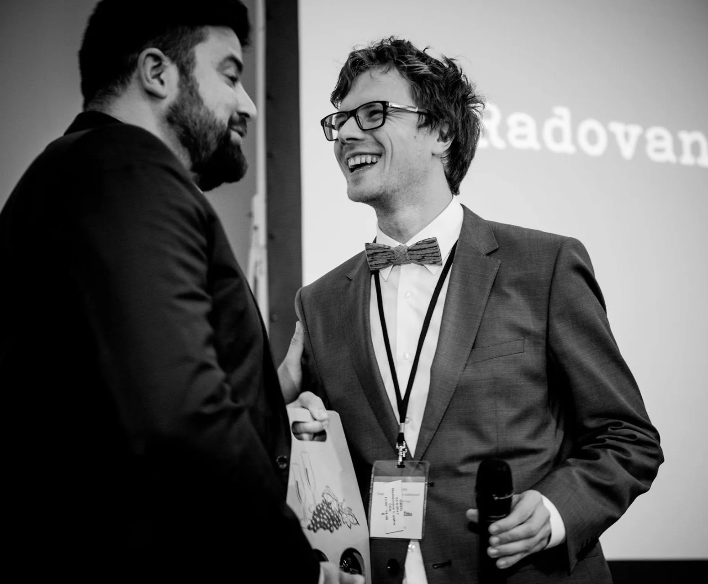
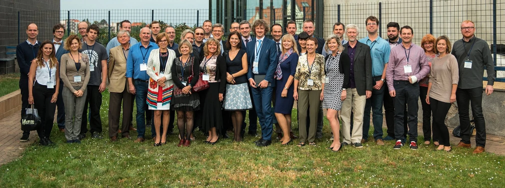
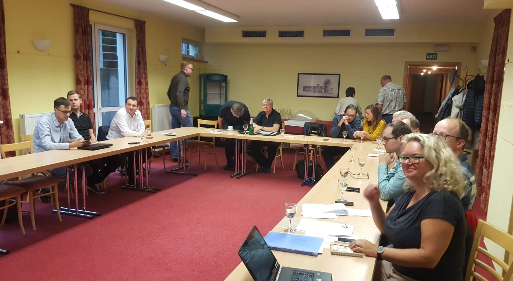

Česká endodontická společnost vznikla 28. května 2007 v Praze. Její přípravný výbor tvořili Luděk Peřinka, Lenka Roubalíková a Jan Netolický. Spojoval je zájem o rozvoj endodoncie, kvalitní vzdělávání a spolupráci mezi lékaři z praxe a univerzitních pracovišť. Prvním předsedou společnosti se stal Luděk Peřinka.
Nová společnost navázala také na předchozí práci endodontické odborné skupiny při České stomatologické společnosti ČLS JEP. K jejich spojení došlo na plenárním zasedání 10. října 2007. Čestné členství tehdy přijaly prof. MUDr. Martina Kukletová, CSc., a doc. MUDr. Eva Záhlavová, CSc., jako ocenění své dlouholeté práce pro českou endodoncii.
V roce 2014 se čestnou členkou ČES stala také doc. MUDr. Lenka Roubalíková, Ph.D., někdejší vědecká sekretářka společnosti.
Setkávání, vzdělávání a první kongres
Základem spolkového života byla osobní setkání a otevřená diskuse o klinických případech. První členský workshop se uskutečnil 23. února 2008 v hotelu Pavilon v Říčanech u Prahy. Sešlo se na něm čtrnáct členů a osm z nich představilo své klinické případy. Na červnové setkání téhož roku přijelo šestnáct členů; hlavním tématem bylo postendodontické ošetření. Tato setkání položila základ pravidelným členským workshopům. Prostor zde měly úspěšné léčebné postupy i rozbory neúspěchů, ze kterých se mohli ostatní poučit. V březnu 2008 se ČES stala řádným členem Evropské endodontické společnosti ESE. Již v září téhož roku se v Praze pod její záštitou a ve spolupráci s Českou stomatologickou komorou uskutečnilo setkání představitelů evropských endodontických společností.

Kongresy a osobnosti světové endodoncie
První kongres České endodontické společnosti se uskutečnil 3. října 2009 v pražském hotelu Pyramida. Přilákal 270 účastníků a založil tradici každoročních odborných kongresů. Pyramida zůstala s kongresem spojená po řadu let. Pozdější ročníky se konaly také v Cubex Centru Praha a hotelu International; od roku 2024 hostí kongres O₂ universum. Ani pandemie tradici nepřerušila: dvanáctý ročník v roce 2020 proběhl online.



K výrazným okamžikům patřil desátý kongres, který se konal 21. a 22. září 2018. Páteční přednášku Mahmouda Torabinejada v Obecním domě připravila ČES ve spolupráci s Pražskými dentálními dny. Sobotní program pokračoval v hotelu Pyramida. Při slavnostním setkání byl oceněn Luděk Peřinka za přínos české endodoncii a vznikla Cena Luďka Peřinky, určená k ocenění mimořádných zásluh o obor.
Mezi významné zahraniční hosty kongresů ČES patřili L. Stephen Buchanan, Jean-Philippe Mallet, Mahmoud Torabinejad, Domenico Ricucci, John Stropko, Shanon Patel, Fabio Gorni a Matthias Zehnder.
Od roku 2024 doplňují kongresový program praktické workshopy, při nichž si účastníci mohou postupy vyzkoušet pod vedením zahraničních lektorů.
Vzdělávání během celého roku
Činnost společnosti se postupně rozšířila o veřejné přednášky, praktické kurzy a odborná doporučení pro každodenní klinickou práci. Vedle výročního kongresu tak vznikl vzdělávací program rozložený do celého roku. Důležitou součástí zůstala členská výjezdní setkání, sdílení zkušeností a spolupráce se Slovenskou endodontickou spoločnosťou.
Samostatné vzdělávací akce rozšířily prostor pro témata, která si zaslouží celý přednáškový den nebo praktický kurz. V roce 2024 tak ČES spolupořádala Den s regenerativní endodoncií s G. T.-J. Huangem a připravila přednáškový den Hubertuse van Waese s přesahem do dětského zubního lékařství. V roce 2025 následovala mikrochirurgická endodoncie s Paulou Villou, doplněná dvoudenním praktickým workshopem.

Časopis, mezinárodní spolupráce a podpora vzdělávání
Rok 2023 přinesl vstup ČES do Mezinárodní federace endodontických společností IFEA a první vydání Občasníku ČES. Časopis propojuje odborné články a kazuistiky se zprávami o dění ve společnosti.
V roce 2024 vznikl Grant ČES na podporu vzdělávání a výzkumu v endodoncii. Společnost se snaží rozvíjet spolupráci s fakultami a podporovat kolegy, kteří se podílejí na výuce. K této snaze patří pořádání odborných přednášek a praktických kurzů i poskytování volných vstupenek na vzdělávací akce akademickým pracovníkům.
Společnost během své historie vedli tři prezidenti: Luděk Peřinka v letech 2007–2015, Daniel Černý v letech 2015–2023 a od roku 2023 Radovan Žižka. Na její činnosti se podílely jednotlivé výbory, revizní komise, organizátoři akcí, autoři a další členové. Jejich společná práce umožnila rozvíjet společnost od prvních workshopů až k dnešnímu celoročnímu programu.
Jak se rozvíjela členská základna
Podle dochované členské databáze evidovala ČES v roce 2007 celkem 15 členů včetně dvou čestných a v roce 2012 již 32 členů včetně dvou čestných. Podle ročních hlášení ESE měla společnost 54 členů v roce 2016, 67 v roce 2023 a 86 v roce 2026.
Dvacet let ČES
V roce 2027 si ČES připomene dvacet let od svého založení. Devatenáctý kongres České endodontické společnosti je plánován na 24. a 25. září 2027. Naváže na tradici, která začala prvním kongresem v roce 2009, i na původní poslání společnosti: propojovat kolegy, sdílet zkušenosti a přispívat ke kvalitě endodontické péče.
Lidé, kteří společnost vedli a rozvíjeli
Následující tabulky zachycují výbor a revizní komisi v jednotlivých funkčních obdobích. Při personální změně je v tabulce uveden člověk, který v daném období působil déle; změny a původní obsazení jsou popsány pod tabulkou. U jednotlivých jmen je uvedena vykonávaná funkce.
První období: 2007–2011
| Orgán | Členové a jejich funkce |
|---|---|
| Výbor | doc. MUDr. Luděk Peřinka, CSc. – předseda společnosti doc. MUDr. Lenka Roubalíková, Ph.D. – vědecká sekretářka MUDr. Jan Netolický, Ph.D. – hospodář MUDr. Simona Ságlová, Ph.D. – členka výboru, od roku 2009 prezidentka kongresu MUDr. Tomáš Horák – člen výboru |
| Revizní komise | MUDr. Jan Baštecký – člen revizní komise MUDr. Lenka Hofreiterová – členka revizní komise MUDr. Štěpán Gála – člen revizní komise |
Zakládající revizní komise: Její první předsedkyní byla doc. MUDr. Eva Záhlavová, CSc. Po přijetí čestného členství v říjnu 2007 bylo její místo třeba obsadit znovu. Jan Baštecký je jako člen revizní komise doložen v roce 2010; přesné datum jeho nástupu není potvrzeno.
Druhé období: 2011–2015
Ve volbách 5. března 2011 se počet členů výboru rozšířil z pěti na sedm.
| Orgán | Členové a jejich funkce |
|---|---|
| Výbor | doc. MUDr. Luděk Peřinka, CSc. – předseda společnosti doc. MUDr. Lenka Roubalíková, Ph.D. – vědecká sekretářka do roku 2013 MUDr. Jan Netolický, Ph.D. – hospodář MUDr. Simona Ságlová, Ph.D. – prezidentka kongresu MUDr. Tomáš Horák – člen výboru MUDr. Filip Světlík – člen výboru MUDr. Martin Dančík – člen výboru, od roku 2013 vědecký sekretář |
| Revizní komise | MUDr. Lenka Hofreiterová – členka revizní komise MUDr. Jan Baštecký – člen revizní komise MUDr. Štěpán Gála – člen revizní komise |
Změna v roce 2013: Lenka Roubalíková odstoupila z výboru 23. března 2013. Funkci vědeckého sekretáře převzal Martin Dančík, který byl členem výboru již od voleb v roce 2011. Na uvolněné místo ve výboru byla 15. června 2013 v Třeboni zvolena MUDr. Soňa Hűttnerová. V tabulce zůstává Lenka Roubalíková, která místo ve výboru zastávala delší část funkčního období.
Třetí období: 2015–2019
| Orgán | Členové a jejich funkce |
|---|---|
| Výbor | MUDr. Daniel Černý, Ph.D. – prezident společnosti MUDr. Martin Dančík – vědecký sekretář MUDr. Jan Baštecký – hospodář doc. MUDr. Luděk Peřinka, CSc. – člen výboru MUDr. Soňa Hűttnerová – prezidentka kongresu MUDr. Jan Šváb – člen výboru MUDr. Filip Světlík – člen výboru |
| Revizní komise | MUDr. Štěpán Gála – předseda revizní komise MUDr. Lenka Hofreiterová – členka revizní komise MDDr. Aristotelis Jakovidis – člen revizní komise |
Čtvrté období: 2019–2023
| Orgán | Členové a jejich funkce |
|---|---|
| Výbor | MUDr. Daniel Černý, Ph.D. – prezident společnosti MDDr. Radovan Žižka, Ph.D. – vědecký sekretář MUDr. Simona Ságlová, Ph.D. – hospodářka doc. MUDr. Luděk Peřinka, CSc. – člen výboru MUDr. Soňa Hűttnerová – prezidentka kongresu MUDr. Jan Šváb – člen výboru Dr. Aleksandra Paklos – členka výboru |
| Revizní komise | MUDr. Martin Dančík – předseda revizní komise MDDr. Aristotelis Jakovidis – člen revizní komise MDDr. Alexandr Čech – člen revizní komise |
Změna ve výboru v roce 2019: Jan Baštecký po zvolení odstoupil a podle výsledků voleb jej nahradila Aleksandra Paklos. Změnu zachycuje zápis z výjezdního zasedání 8. června 2019 v Ostravě.
Změna v revizní komisi v letech 2020–2021: MUDr. Jelena Lerchová odstoupila 16. prosince 2020; nahradil ji Alexandr Čech. Zápis z 5. června 2021 již potvrzuje jeho členství v komisi. Přesné datum kooptace není doloženo.
Páté období: od roku 2023
| Orgán | Členové a jejich funkce |
|---|---|
| Výbor | MDDr. Radovan Žižka, Ph.D. – prezident společnosti MUDr. Martin Dančík – vědecký sekretář MDDr. Alexandr Čech – hospodář MDDr. Aristotelis Jakovidis – prezident kongresu MUDr. Hana Zallmannová – členka výboru MDDr. Gabriel Dékány – člen výboru MUDr. Michal Bumbálek, Ph.D. – člen výboru |
| Revizní komise | MDDr. Jan Lapiš – předseda revizní komise Dr. Aleksandra Paklos – členka revizní komise MDDr. Vít Jiroušek – člen revizní komise |
Občasník ČES a redakční rada
Občasník ČES vychází od roku 2023. Přípravou čísla pro rok 2025 byl pověřen Antonín Tichý, který je současným šéfredaktorem.
Současná redakční rada: MDDr. Antonín Tichý, Ph.D., MDDr. Radovan Žižka, Ph.D., MDDr. Jan Lapiš a MUDr. Martin Dančík.
ČES děkuje všem, kteří se v jednotlivých obdobích podíleli na vedení společnosti, práci revizní komise, přípravě kongresů a dalších vzdělávacích akcí nebo vydávání časopisu. Jejich práce je součástí společné historie české endodoncie.